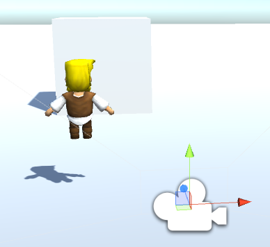
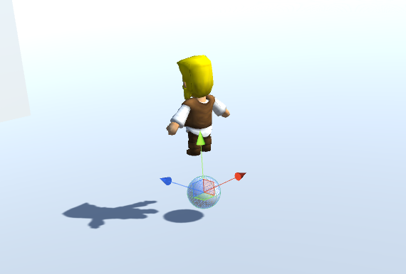
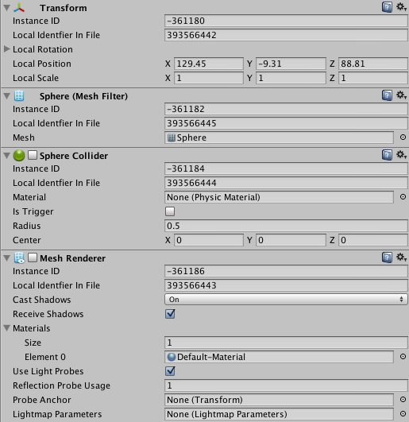
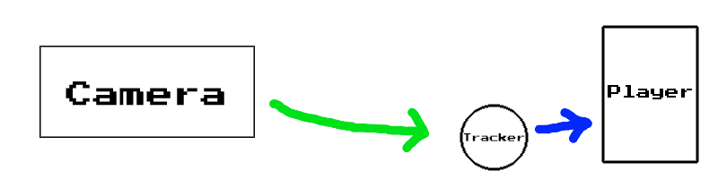
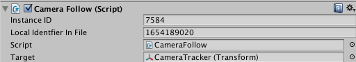
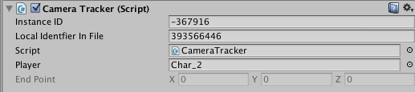

3D Lagging Camera in Unity
Hey everyone! As you all know by now, I am currently in the process of creating a 3rd person 3D game using
Unity. One very important component
of such a game is the camera.
** Please note: This tutorial is not in any way only for Unity users. The screenshots I provide and some
of the functions
I use may be exclusive to Unity, however the general concept is entirely universal **
Anyway, let's get started!
A 3D camera is not always easy to work with, even in such a great program like Unity. If you've ever dabbled in
Unity before at all, you will recognize what
you see in this picture:

For those of you who aren't familiar with Unity, in the bottom right corner of the picture is the actual camera
object. This camera is capable of viewing whatever
it is pointed at, and then displaying it to the game's screen. Then, of course, in front of it is my player, and
a cube on the ground to play around with.
There are a few methods for getting the camera to follow the player in a 3rd person game.
One commonly used method is making the camera a child of the player. This way, whenever (and wherever) the
player moves, the camera will also move.
This technically accomplishes the goal of having the camera follow the player, but there are some negative
implications with this structure.
The major problem with making the camera a child of the player is that all transformations that apply to
the player also apply to the camera.
This means that if the player's model rotates, the camera is also going to rotate with it (and vice-versa). This
becomes a major issue in a 3rd person game,
since the player can never truly rotate without the camera copying it.
Another method, the one I prefer and use, is to have the camera entirely independent of the player. To make the
camera follow the player, the camera's script
keeps track of the player's position at all times and moves accordingly. The camera is simply given an offset to
stay a certain distance away from the player.
I'm going to go ahead and post the code for the camera, and then explain exactly what is going on.
using UnityEngine;
using System.Collections;
public class CameraFollow : MonoBehaviour {
public Transform Target; //The target is what the camera will look at
private Vector3 _cameraMovementVector; //The camera input from the controller
private Vector3 _offset; //The difference between the camera's
//position and its "target"
void Start() {
//Initialize our offset to put the camera at the position we want.
//Through trial and error, I found that these values worked nicely
//and put the camera in a good spot
this._offset = new Vector3(this.Target.position.x - 130.0f,
this.Target.position.y + 15.0f, this.Target.position.z - 105.0f);
}
//Use LateUpdate to ensure that the player's position actually changed (in update)
//before moving the camera to follow it
void LateUpdate () {
//Check for camera movement input
this._cameraMovementVector.x = Input.GetAxis("Right joystick X");
this._cameraMovementVector.y = Input.GetAxis("Right joystick Y");
//Adjust the camera's offset based on our input (for rotation)
this._offset = Quaternion.AngleAxis(this._cameraMovementVector.x, Vector3.up)
* this._offset;
//Adjust the camera's possition based on our offset
this.transform.position = this.Target.position + _offset;
//Adjust the camera's rotation to "look at" its target
this.transform.LookAt(new Vector3(this.Target.position.x,
this.transform.position.y, this.Target.position.z));
}
}
Okay, so we now have our camera script created. The comments in the code explain exactly what each line is accomplishing. If you have any code-specific questions, please post below and I will answer them!
When you attach it to the camera, you will notice that you have to give it a target. This is where things begin to get interesting.
If you were to make the player the target of the camera, things would work quite well. This is actually how I had it set up for a long time until I realized that something was off.
With this setup, the camera will immediately follow every movement the player makes. Instantly.
Basically, the player will always be in the center of the screen (or however you initially position the camera). We don't want this. We want the player to have some room to walk before the camera starts following. This makes everything much more realistic and enjoyable to play.
This is where the concept of a "lagging camera" finally comes into play.
My definition of a lagging camera is one that chases after its target, rather than following it one-to-one. To accomplish this, we're going to have a target that is entirely separate from the player. We will call this the Camera Tracker.
Let's begin by creating a new 3D object in Unity. I choose to make mine a sphere, but it doesn't matter what shape you choose. Place the 3D object somewhere around where the player's feet are going to start out when the game runs.

Once the object is there, you need to turn off some of its features. You'll want to either disable or remove the mesh renderer and the collider on the object. When the mesh renderer is disabled, it will become invisible in your scene and the game. The inspector should look something like this:

This 3D object that you just placed is going to chase after the player when he or she moves too far away from it. Let's write the code for that now!
using UnityEngine;
using System.Collections;
public class CameraTracker : MonoBehaviour {
public GameObject Player;
private Vector3 _endPoint;
private const float DISTANCE_THRESHOLD = 6.0f;
void Start () {
if (this.Player != null) {
this._endPoint = this.Player.transform.position;
}
}
void Update () {
if (this.Player != null) {
//Check if the distance between the player and the ball is big enough
//to start moving
if (Vector3.Distance(this.Player.transform.position,
this.transform.position) > DISTANCE_THRESHOLD) {
//Start moving towards the player
this.transform.position = Vector3.Slerp(
this.transform.position, this._endPoint, Time.deltaTime);
}
//Check if the tracker has finally reached its end point.
//If it hasn't, keep on moving.
if (this.transform.position != this._endPoint) {
this.transform.position = Vector3.Slerp(
this.transform.position, this._endPoint, Time.deltaTime);
}
//Update the last frame's player position
this._endPoint = this.Player.transform.position;
}
}
}
With this code, the tracker will constantly be aware of the player's position in the world. If, at any point, the player gets too far away from the tracker (as defined by
DISTANCE_THRESHOLD), the tracker will begin moving towards the player.
It's important to note the method of moving the tracker we are using. We are using something called
Vector3.Slerp.
"Slerp" stands for
Spherical Linear Interpolation.
A regular linear interpolation moves an object from a starting position to an ending position over a certain amount of time at a constant speed.
A spherical linear interpolation does the same thing, however its graph is more of a curve (think a quarter of a sphere). As a result, as the tracker approaches its end point, it will gradually slow down as the curve in the graph evens out.
As a result, the 3D object will move at a fairly steady pace towards the player until it gets close to it, when it will then slow down. This makes for very smooth camera movement.
Now, if you haven't guessed by now, the camera will be tracking this 3D object instead of the player. This is the basic structure we have set up:

The camera will follow the 3D Tracker, which will be chasing after the player whenever appropriate.
Okay! The only thing left to do now is make sure everything is connected properly.
Go back into Unity and select the camera. If you haven't yet, attach the CameraFollow script to it. You'll need to connect the Tracker to it as the target.

Next, select the 3D Tracker you created and attach the CameraTracker script if you haven't already. You'll then need to connect the Player to it as the target.

...and that's it! When you run the game, the camera should be looking at the invisible tracker (so basically staring at your player if you positioned the tracker correctly). When the player moves, the tracker (and camera) won't move until you are
DISTANCE_THRESHOLD
units away from it. This gives you
the desired camera lag!
If you have any questions, comments, or suggestions, please post them below.
Happy developing :-)
Tweet